Setup
In this portion of the tutorial, we will work on obtaining the following pieces of information:
- Client ID
- Client Secret
- JWT private
- JWT public
- New AoC Integration
-
For spimlicity purposes, all files that will be required for this demo will be stored in
analytics-api-demodirectory. Go ahead and create that directory now. In terminal, complete the following:mkdir analytics-api-demo cd analytics-api-demo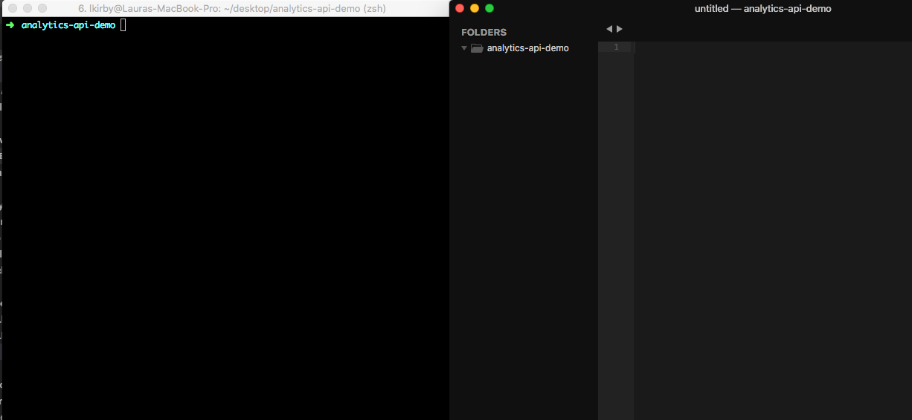 -
Generate private and public keys
ssh-keygen -t rsa -b 4096 -m PEM -f jwtRS256.key- when prompted, press enter twice to greate a key without a passphrase.
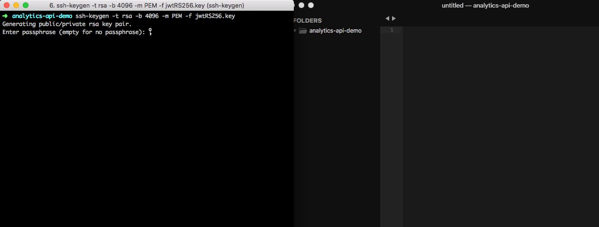 -
You should see the keys in the newly created files.
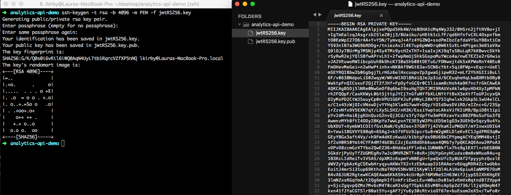 -
Configure the public key for openssl
openssl rsa -in jwtRS256.key -pubout -outform PEM -out jwtRS256.key.pub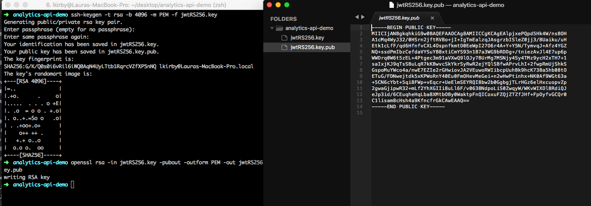 -
In the “Admin” app of AoC, create a new “Integration”
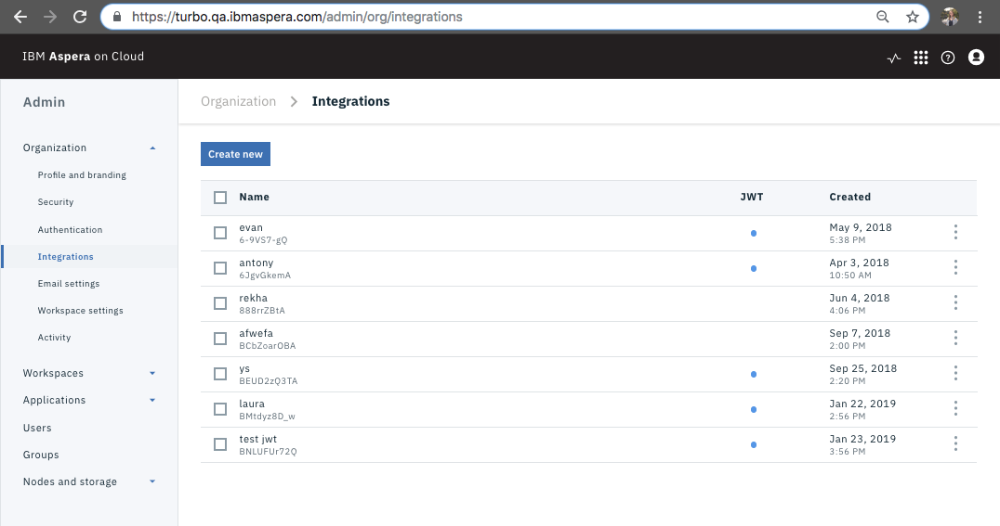 -
Here is what the “new” form will look like
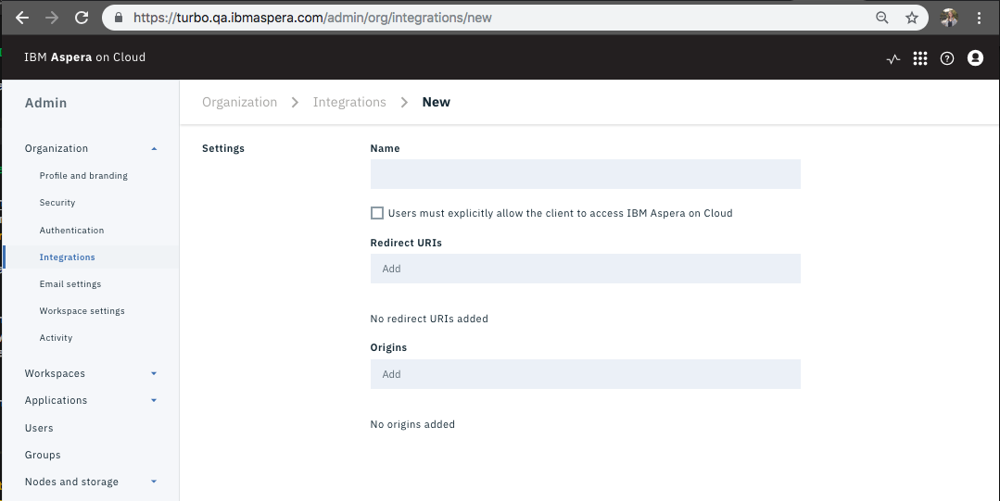 -
Fill out form, for the purpose of the Analytics API, the “Redirect URIs” and “Orgins” can be any value. Click “Save”.
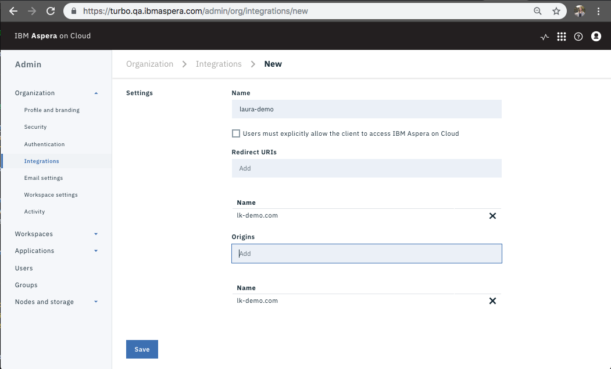 -
You should now be looking at your newly created Integration’s “Profile”.
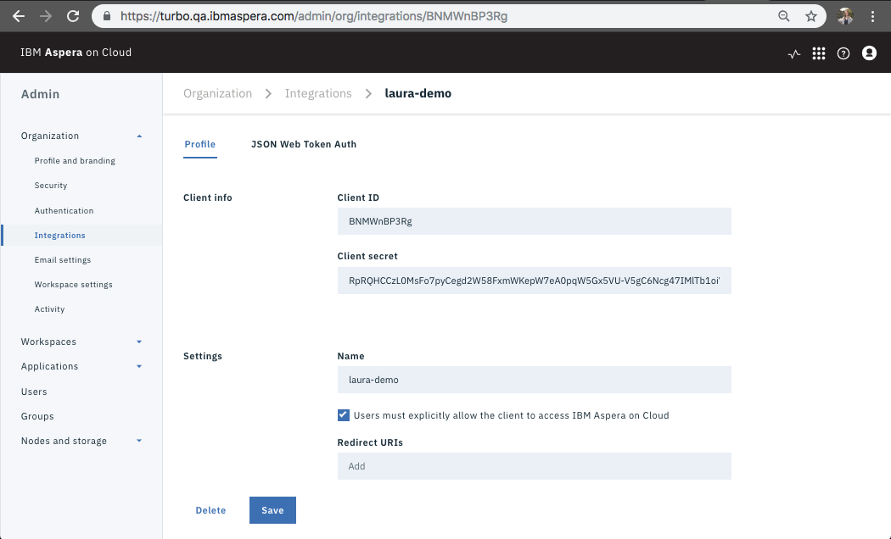 -
Click on the submenu “JSON Web Token Auth”.
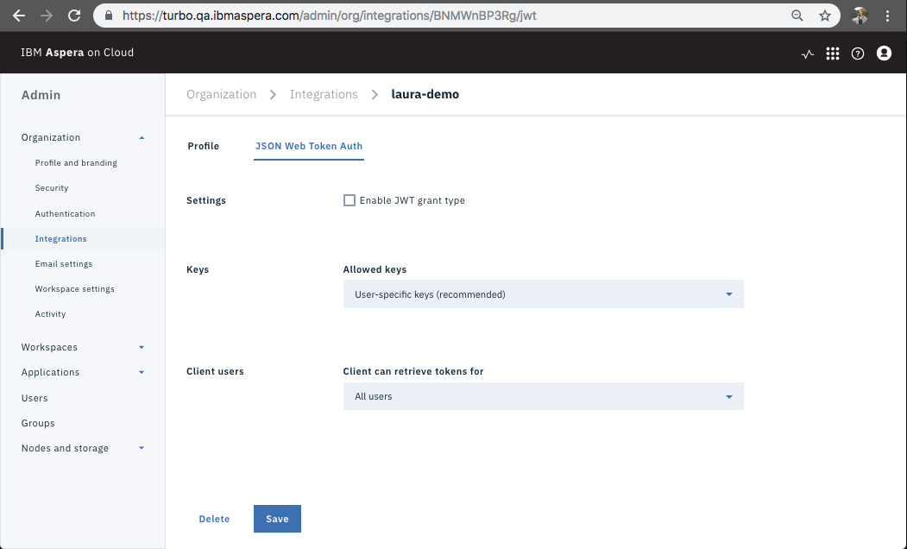 -
Make the following selections to permit authentication (double check this, may not need to grant as much access).
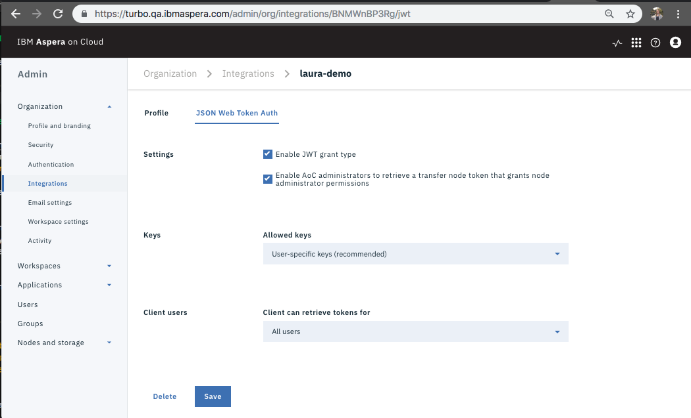 -
Make the additional following selections to permit authentication (double check this, may not need to grant as much access).
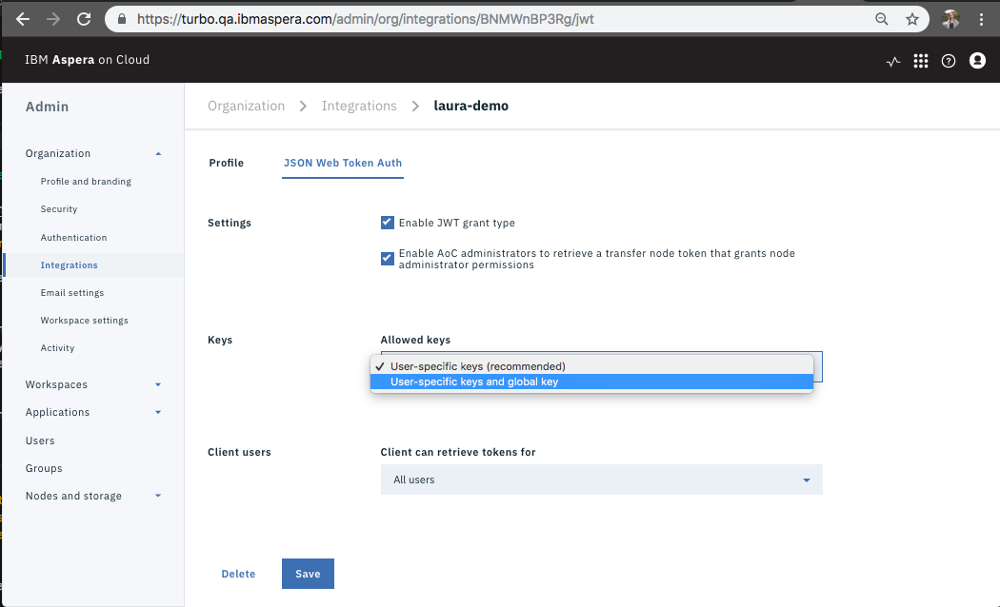 -
Confirm that you would like to permit global keys.
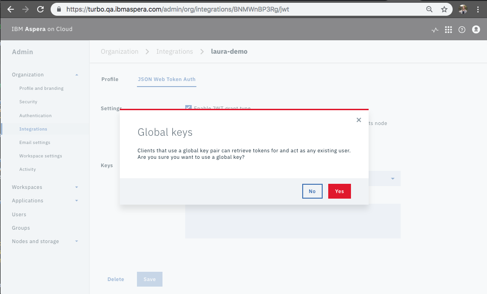 -
Add your public JWT (generated in step 3) to the field titled “Public Key (PEM Format)”.
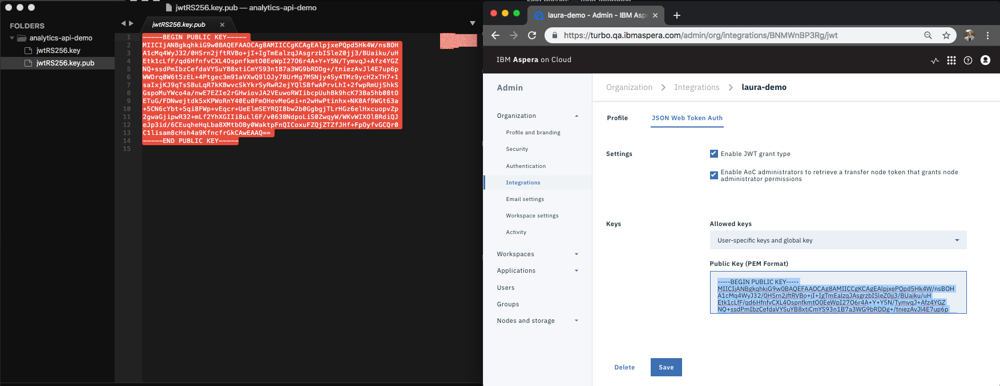 -
Back in terminal, create an empty
.config.ymlfile.touch config.yml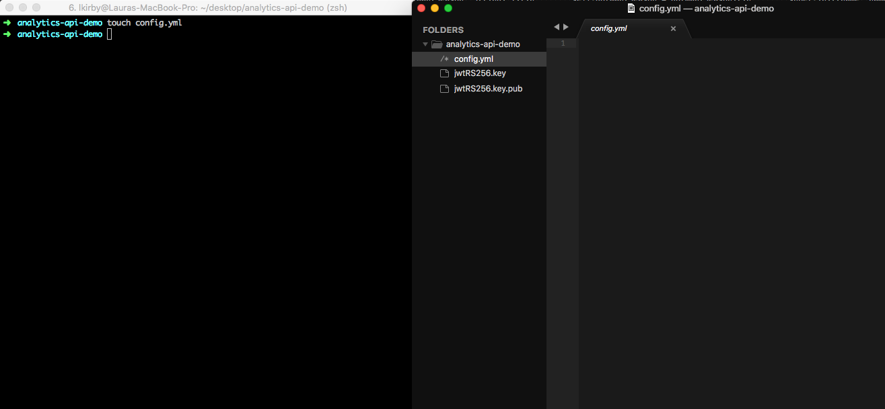 -
Use the submenu to vist your integration “Profile”. Use the keys that I have listed in the
config.ymlfile; however, update the values with information that is specific to you.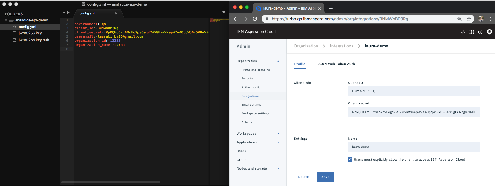 -
Visit API Requests to learn about making requests to the Analytics API.